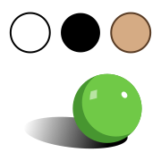
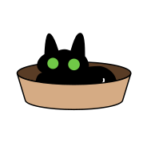
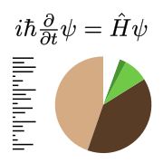
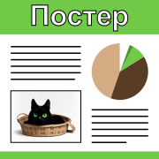
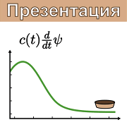

Научная графика
Практический онлайн-курс по подготовке изображений для научных публикаций, дизайну презентаций и верстке постеров, соответствующих требованиям печати и принципам эффективной визуальной коммуникации.
Семинар 1
Базовые рисунки
Adobe Illustrator

Растровые и векторные изображения. Введение в Adobe Illustrator: интерфейс, сочетания клавиш, навигация в окне документа, панель истории.
Графические примитивы. Сдвиги, повороты и масштабирование. Методы комбинирования векторных форм.
Настройки внешнего вида: заливка и обводка, прозрачность, параметры линий, разворачивание стилей.
Слои изображения и группирование объектов, изменение размеров холста.
Семинар 2
Сложные векторные формы
Adobe Illustrator

Кривые Безье́ и инструмент «Перо» (Pen Tool). Создание и редактирование векторных форм, добавление и удаление точек, заострение и сглаживание углов, соединение кривых. Инструменты выделения объектов и опорных точек, режим изоляции.
Векторизация растровых изображений: обводка вручную и автоматическая трассировка.
*Деформации по сетке из кривых (Envelope deform).
Семинар 3
Обработка растровых изображений
Adobe Photoshop
Интерфейс, cравнение с Adobe Illustrator. Изменение размеров изображения и холста, разрешение документа (dpi), соответствие требованиям для печати. Форматы растровых изображений и сжатие.
Инструменты рисования, прозрачность слоёв. Выделение и вырезание частей изображения, режим свободной трансформации (Free Transform). Цветокоррекция, окраска изображений, фильтры увеличения резкости.
*Неразрушающее редактирование: маски, «Умные объекты» (Smart objects), «Корректирующие слои» (Adjustment Layers). Инструменты ретуши.
Семинар 4
Комбинированные иллюстрации
Adobe Illustrator + Adobe Photoshop

Привязка и встраивание внешних файлов, панель «Ссылки» (Links), импорт растровых и векторных изображений. Встраивание документов Adobe Photoshop и Adobe Illustrator с возможностью редактирования слоёв, текста и внешнего вида векторных объектов.
Нанесение обозначений: сносоки, подписи, размерные линии, углы, стрелочки, настройки внешнего вида для двойных и пунктирных линий. Эффекты слоёв.
*Группа инструментов «Размер» (Dimension).
Семинар 5
Инфографика
Adobe Illustrator

Построение графиков в Adobe Illustrator, импорт и автообновление табличных данных. Инструменты векторной сетки (Grid Tools).
Импорт и сортировка внешних .pdf файлов: настройки автозамены отсутствующих шрифтов, встраивание с сохранением внешнего вида надписей и векторных стилей, команда «Сплющивание прозрачностей» (Flatten Transparency), выделение групп объектов по свойствам и типу, сброс параметров стиля.
*Импорт готовых LaTeX документов, рендер формул LaTeX в Adobe Illustrator.
Семинар 6
Текст и вёрстка
Adobe Illustrator | *Adobe InDesign

Виды текстовых слоёв, связывание текстовых блоков. Параметры шрифтов и абзацев, настройки текстовой области (Area Type Options), вертикальный отступ первой строки. Векторизация текстовых слоёв. «Обтравочные маски» (Clipping Masks).
Форматы векторных файлов, параметры сохранения в .ai и .pdf. Экспорт в .eps и .svg, растеризация векторных изображений в .png.
*Основы типографики, классификация шрифтов.
Семинар 7
Принципы гештальта
Adobe Illustrator | *Adobe InDesign
Визуальное структурирование материала, информация и шум, композиция и баланс. Принципы повторяемости, контраста и близости. Воплощение в выравнивании, тексте и цветах.
Средства соблюдения повторяемости в Adobe Illustrator: инструмент «Пипетка» (Eyedropper), настройки масштабирования стилей, глобальные образцы цвета, панель «Выравнивание» (Align).
*Выравнивание по монтажной области и ключевому объекту. Линейки, направляющие, умные направляющие и привязка к сетке. Оптическая компенсация.
Литература
- Уильямс, Р.: Дизайн. Книга для недизайнеров. Принципы оформления и типографики для начинающих. — СПб.: Питер, 1994 (2018)
Семинар 8
Презентации
Microsoft PowerPoint

Элементы векторной графики: кривые Безье́ и редактирование форм, объединение и пересечение объектов, обтравочные маски. Импорт и встраивание векторных изображений, формулы LaTeX.
Инструменты вёрстки: панель слоёв, линейки и направляющие, упорядочивание и выравнивание слоёв, слайды-шаблоны. Содержание и нумерация страниц. Динамические элементы и навигация.
Анимация и переходы: базовые принципы и удержание внимания, редактирование траекторий, последовательности. Переход «Преобразование» (Morph), анимация графиков и формул.
*Извлечение исходных файлов, комментарии в раздаточных презентациях, экспорт в видео.